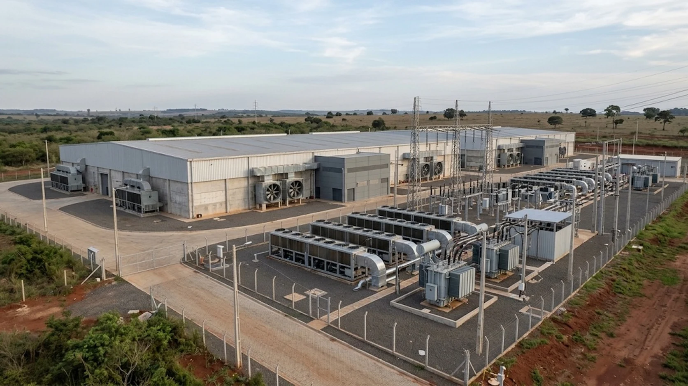

Paraguay Sets 2027 Power Deadline for Bitcoin Miners as AI Demand Grows
Paraguay’s utility plans to end special miner contracts in 2027 as a 15-year power deal gives a planned AI campus a longer-term foothold.

Paraguay’s state-owned electricity utility is preparing to let special power contracts for cryptocurrency miners expire at the end of 2027, putting pressure on an industry that has expanded around the country’s abundant hydropower. At the same time, a separate 15-year electricity agreement for a planned artificial intelligence campus highlights how demand from data-intensive businesses is changing the competition for the country’s energy resources.
Mining contracts face a 2027 deadline
The deadline is important for Bitcoin miners that have built large operations in Paraguay by securing access to comparatively low-cost electricity. According to reporting by CoinDesk, the special contracts cover approximately 944 megawatts of capacity and generate about $350 million in annual payments for the utility. The contracts are scheduled to expire on December 31, 2027, and the utility has described the deadline as final.
The issue is not simply whether Paraguay has enough electricity in aggregate. The country’s hydropower resources have made it attractive to energy-intensive industries, but new demand from data centers and AI infrastructure is creating pressure to reconsider how electricity is allocated and priced. Power that was previously available to cryptocurrency operators may become more valuable to other users, particularly projects seeking long-term supply commitments.
The change creates a significant planning challenge for miners. Bitcoin mining economics depend heavily on electricity costs, hardware efficiency and the market price of the cryptocurrency. A change in power tariffs or the loss of a supply agreement can alter the profitability of a facility even if the mining equipment remains operational.
HIVE Digital Technologies is among the companies with substantial exposure to the deadline. The company’s two Paraguayan power agreements cover a 200-megawatt site in Yguazú and a 100-megawatt site in Valenzuela. Both agreements are reported to run until December 31, 2027. HIVE has previously disclosed that a large share of its operating capacity is located in Paraguay, making the renewal or replacement of those agreements important to its regional strategy.
The company has not publicly confirmed a new long-term arrangement that would remove the uncertainty. Its options could include negotiating new terms, reducing operations, seeking alternative power arrangements or shifting investment to other markets. Each option would have consequences for operating costs and the pace at which the company can expand.
AI infrastructure enters the power market
The competition for electricity is illustrated by a separate agreement signed by Paraguay’s utility, ANDE, and Kuntur, a local company linked to the planned Iguazú AI City project. The agreement provides for electricity supply over 15 years, with a maximum contracted capacity of up to 286 megawatts. The project is backed by Araico Corporation and is intended to support a large AI and data-center campus in the Yguazú area.
The agreement is structured to increase supply over time rather than deliver the full amount immediately. Initial supply is scheduled to begin at 6 megawatts on December 1, 2026. The contract provides for a substantial increase in April 2028, after the special mining contracts are due to expire. The phased arrangement gives the project a defined path toward larger electricity consumption while allowing infrastructure to be developed in stages.
The reported average electricity price for much of the contracted supply is about $48.91 per megawatt-hour, with annual adjustments linked to U.S. inflation and a minimum increase. That price is higher than the approximately $44 per megawatt-hour reportedly paid under some existing mining contracts, but it provides a longer contractual horizon. For a data-center project, predictable long-term supply can be as important as the initial tariff because computing infrastructure requires continuous electricity and substantial upfront investment.
ANDE engineers have also discussed a possible cap of 700 megawatts for combined allocations to cryptocurrency mining, AI and data centers, alongside proposals for allocating power at higher rates. That figure should be treated as a proposal rather than an adopted policy. If implemented, such a limit could intensify competition among existing miners and new data-center operators, but the final impact would depend on how the cap is designed and which projects are included.
The potential scale of new demand is another concern. CoinDesk reported that the utility had received requests for additional electricity supply totaling several gigawatts. Those requests are not the same as approved contracts or confirmed consumption, but they illustrate the scale of interest in Paraguay’s power resources.
For the government and ANDE, the challenge is balancing export revenues, domestic electricity needs, industrial development and the reliability of the national grid. Cryptocurrency mining can provide a large and relatively flexible source of demand, but AI data centers may offer a different investment profile, with longer-term infrastructure commitments and a broader set of economic activities.
The transition is not guaranteed to be straightforward. AI campuses require significant investment in buildings, networking, cooling systems and computing equipment. Their electricity requirements can also grow rapidly as capacity expands. A long-term contract therefore signals commercial intent, but it does not by itself prove that every planned phase will be completed on schedule.
For miners, the December 2027 deadline creates a clear point around which to plan. For Paraguay, the AI agreement demonstrates that the next phase of electricity demand may be shaped by competition between different types of digital infrastructure. The outcome will depend on final tariff policy, grid capacity and whether existing operators can secure new contracts on terms that keep their facilities economically viable.